Kisah Joko Baru
Salah satu cerita yang berkembang di masyarakat mengenai asal-usul nama Tulungagung berkaitan dengan kisah Joko Baru dan perjalanan wilayah Tulungagung pada masa lampau.
KABUPATEN DI JAWA TIMUR
Mengenal lebih dekat sejarah, budaya, wisata, dan potensi Kabupaten Tulungagung.
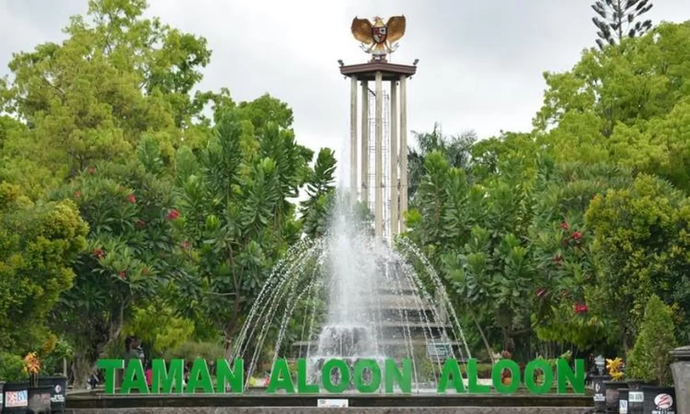
Kabupaten Tulungagung merupakan salah satu kabupaten yang berada di Provinsi Jawa Timur. Wilayah ini memiliki kekayaan alam, budaya, dan potensi ekonomi yang beragam.
Tulungagung dikenal dengan berbagai potensi daerah, mulai dari pertanian, perikanan, pariwisata, hingga industri marmer dan kerajinan.
Dengan keberagaman tersebut, Tulungagung menjadi daerah yang memiliki karakter budaya dan potensi ekonomi yang menarik untuk dikenal lebih jauh.
Mengenal perjalanan sejarah dan berbagai cerita mengenai asal-usul nama Kabupaten Tulungagung.
Salah satu cerita yang berkembang di masyarakat mengenai asal-usul nama Tulungagung berkaitan dengan kisah Joko Baru dan perjalanan wilayah Tulungagung pada masa lampau.
Wilayah Tulungagung pada masa lalu juga berkaitan dengan kawasan yang dikenal sebagai Ngrowo. Perkembangan wilayah tersebut menjadi bagian dari perjalanan sejarah Tulungagung.
Peristiwa yang berkaitan dengan sejarah awal Kabupaten Tulungagung.
Penetapan Hari Jadi Kabupaten Tulungagung.
Tulungagung memiliki beragam destinasi wisata alam dan budaya yang menarik untuk dikunjungi.
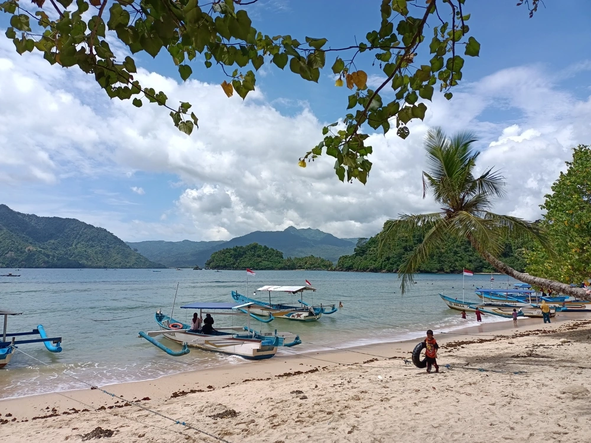
Salah satu destinasi wisata pantai di kawasan Tulungagung.
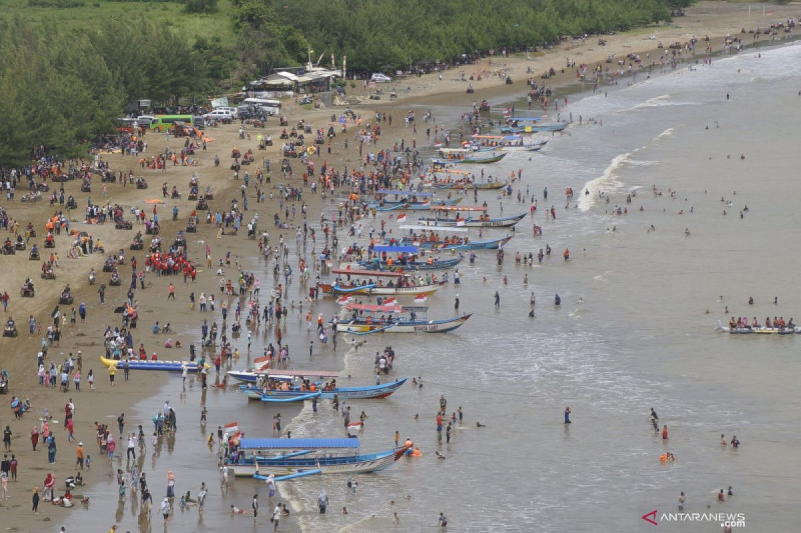
Destinasi wisata pesisir dengan panorama pantai yang menarik.
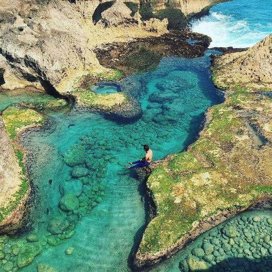
Destinasi pesisir dengan karakter bebatuan dan kolam alami.
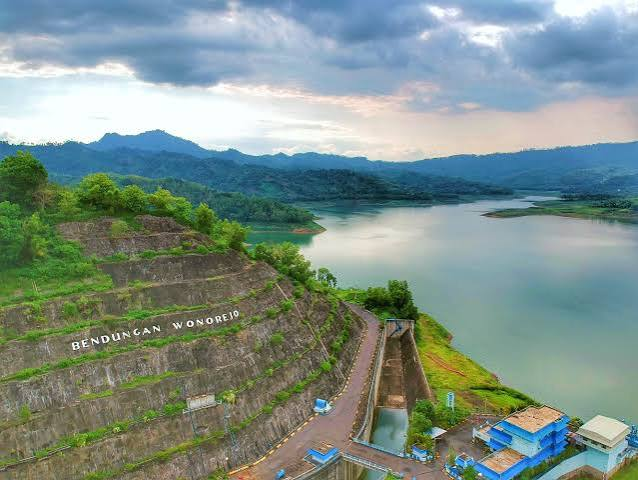
Kawasan waduk dengan pemandangan alam yang menarik.
Mengenal tradisi, seni, dan warisan budaya yang menjadi identitas masyarakat Tulungagung.
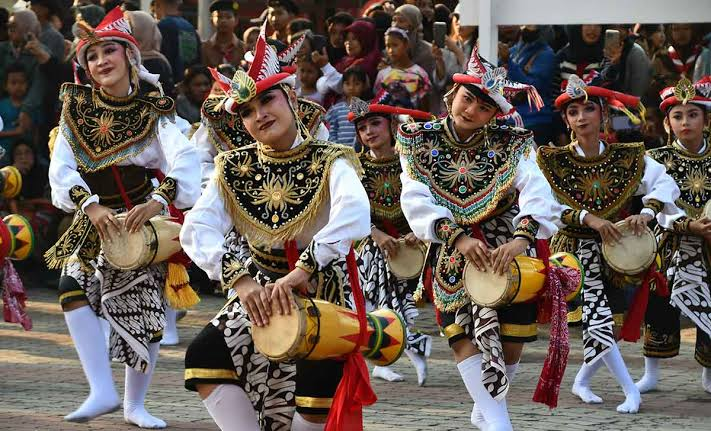
Salah satu kesenian khas Tulungagung yang menggunakan kendang sebagai bagian utama pertunjukan.
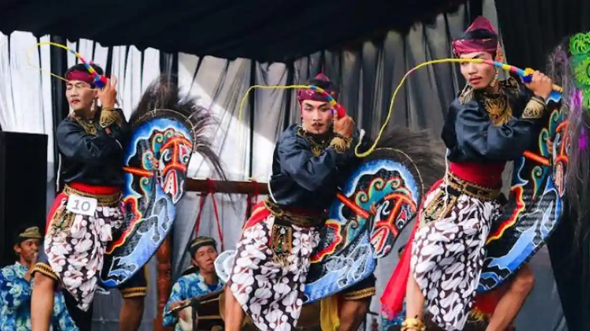
Kesenian tradisional yang memadukan unsur gerak dan musik.
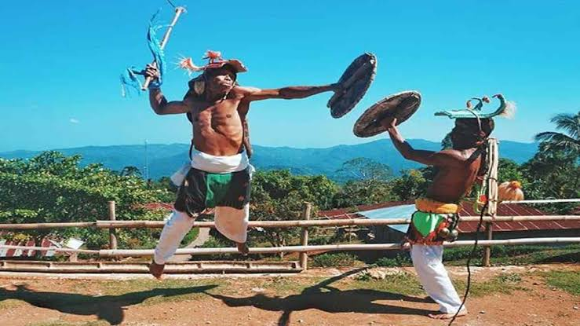
Tradisi masyarakat yang menjadi bagian dari kebudayaan daerah.
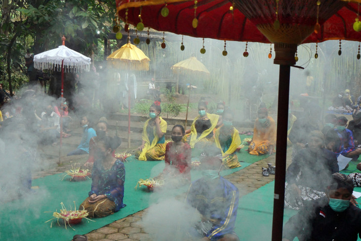
Upacara adat masyarakat yang menjadi bagian tradisi setempat.
Beragam kuliner khas yang mencerminkan cita rasa dan tradisi masyarakat Tulungagung.
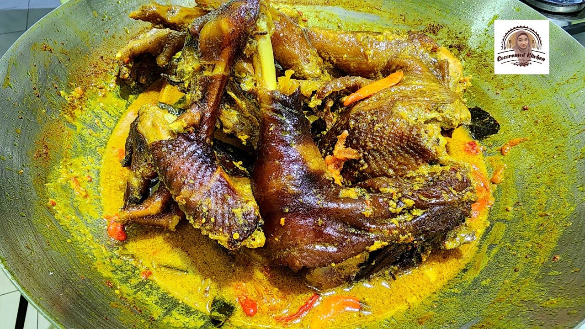
Hidangan khas dengan cita rasa gurih dan bumbu yang kuat.
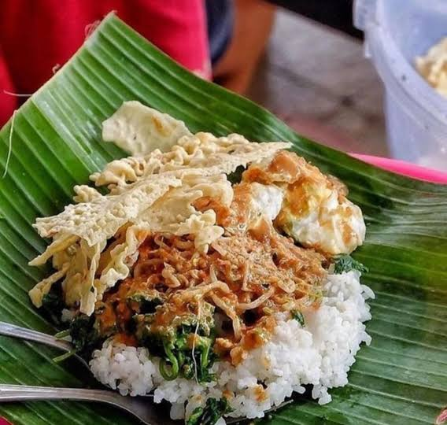
Hidangan yang terdiri dari nasi, sayuran, dan sambal pecel.
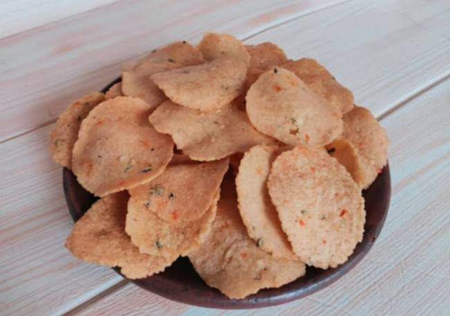
Salah satu kuliner tradisional yang dapat ditemukan di Tulungagung.
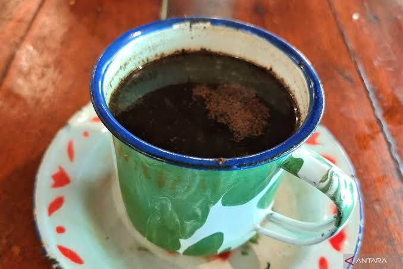
Kopi khas yang memiliki budaya penyajian unik di masyarakat.
Tulungagung memiliki berbagai potensi ekonomi dan sumber daya yang dapat terus dikembangkan.
Potensi pertanian menjadi salah satu sumber penghidupan masyarakat.
Potensi perikanan darat maupun laut terus dikembangkan.
Industri dan kerajinan menjadi salah satu potensi ekonomi daerah.
Kekayaan alam dan budaya mendukung perkembangan sektor pariwisata.